We have already learnt about rotation. Rotation means turning around a centre. The paper windmill, merry-go-round, fan, tops, wheels of vehicles, fidget spinner are few examples of rotating objects that we see in our life.
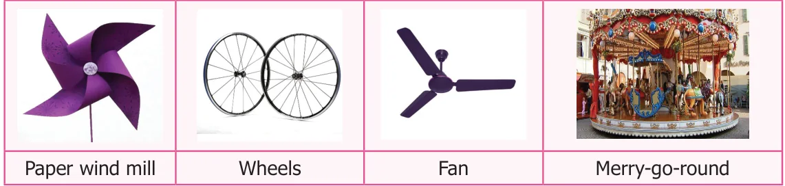
When one rotation is completed, the rotating object comes back to the position where it started. During a complete rotation, the object moves through \(360^{\circ}\).
Think about the situation
Take two rectangular biscuits from the same packet and put one on the other. Holding one biscuit firmly rotate the other on it about the centre.
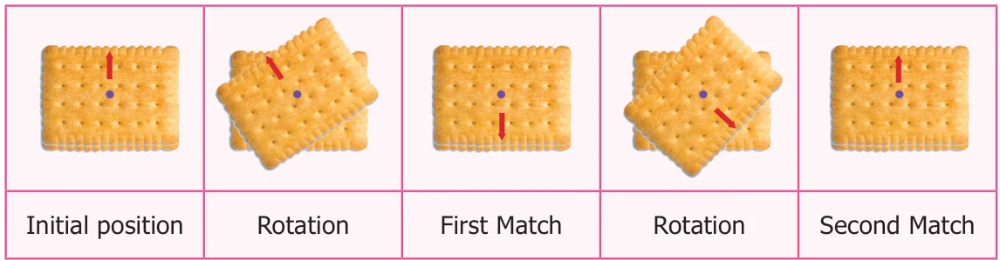
How many times does it fit exactly on the other in a complete rotation? Two times.
In the example given below, if you rotate the fidget spinner about the centre, there are three positions in which the fidget spinner matches exactly the same in a full rotation.
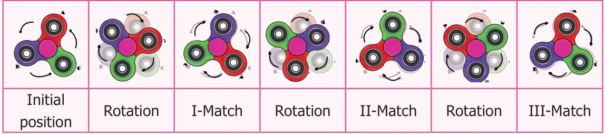
Place a set square (containing angles \(60^{\circ}\), \(30^{\circ}\) and \(90^{\circ}\)) on a paper and draw an outer line around it. What type of triangle do you get? Yes, Scalene triangle. If you rotate it about the centre, there is only one position in which the set square fits exactly inside the outer line.
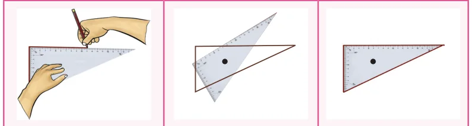
In the above situations 1 and 2, the total number of times the rectangular biscuit and the fidget spinner matches exactly with itself in one complete rotation is 2 and 3 respectively. This is called the order of rotational symmetry. In situation 3, the set square matches itself only once in one complete rotation and hence has no rotational symmetry.
An object is said to have a rotational symmetry if it looks the same after being rotated about its centre through an angle less than \(360^{\circ}\) (If the order of rotation of an object is atleast two).
Think
Can you identify the object which does not have rotational symmetry in the above situations? Why?
Example 10
A man-hole cover of a water sump is in square shape.
- In how many ways we can fix that to close the sump?
- What is its order of rotational symmetry?
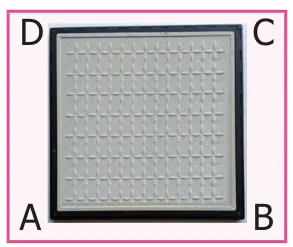
Solution
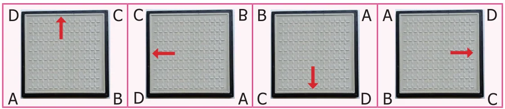
- We can fix it in 4 ways as shown above.
- The order of rotational symmetry is 4.
Think
Suppose, the man hole cover of the water sump is in circular shape.
- The number of ways to close that circular lid is \(\underline{\qquad}\)
- What is its order of rotational symmetry?
Activity
Find the order of rotational symmetry by fixing the relevant shape in different ways.
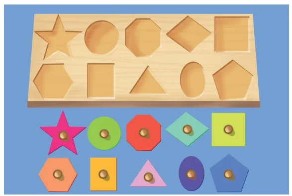
Example 11
Find the order of rotation for the following figures.
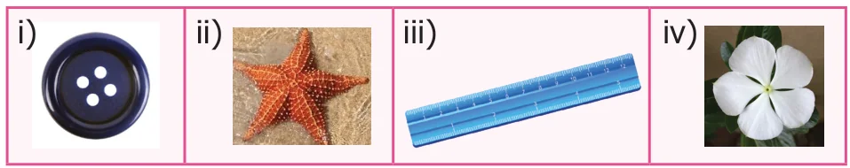
Solution
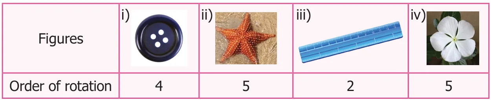
Example 12
Find the order of rotation for the following shapes.
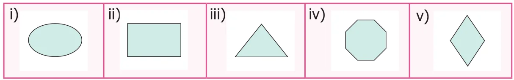
Solution
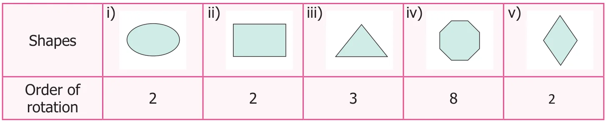
Example 13
Join six identical squares so that atleast one side of a square fits exactly with any other square and have rotational symmetry (any three ways).
Solution
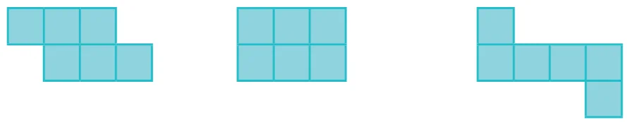
Do you know?
The opening in the given spanner has six sides, so it is a hexagon. The spanner has rotational symmetry of order 6 and fits a hexagonal bolt in any of six positions.
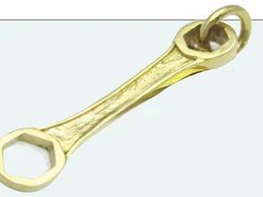